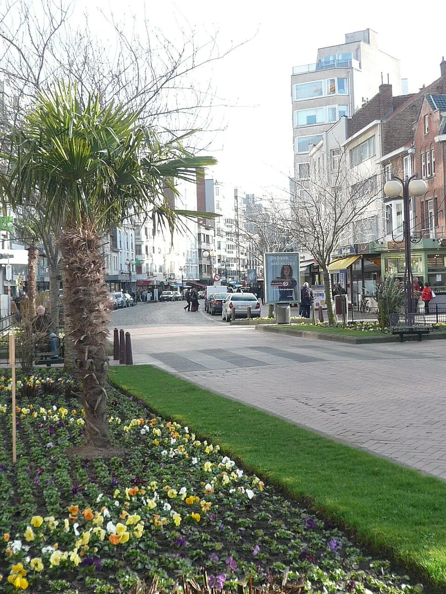

De Panne · 0 km
The widest beach
0 km · on foot
Up to 425 m wide at low tide and over 5 km long — the widest stretch on the Belgian coast, no stone groynes, gentle slope.[16] Sand-yacht races started here in 1909.
DUNE · BEACH · SAND-YACHT